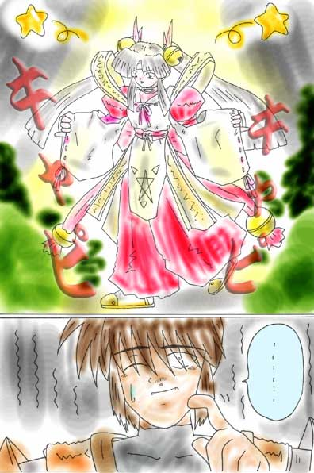
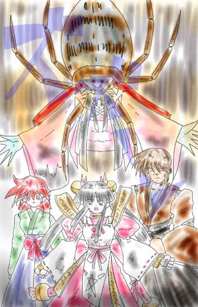
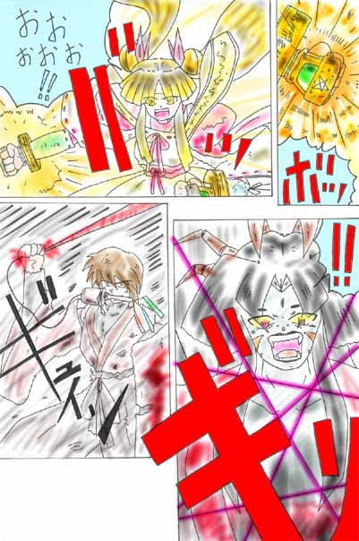
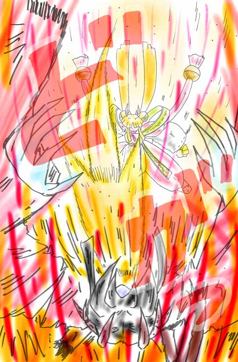
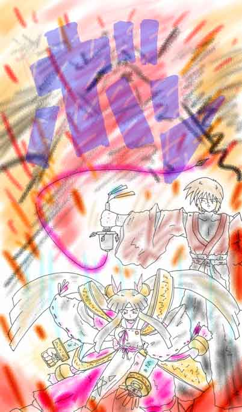

妖魔奇譚
作：ＢＡＦ
五月半ばのある日の昼下がり、東京からあまり遠くない観光地の駅に汽車が止まった。 さすがに観光地だけあってたくさんの人間が乗り降りしていた。 そして、その汽車から降りてくる者たちの中にその男の姿もあった。
その男は二十台半ば位で、あまりパッとしない風貌をしていた。 着ているものといえば洗いざらした綿の着物に埃っぽい黒色の袴、薄汚い茶色をした外套を纏って、これまた薄汚く変色した布張りのトランクを手に持っていた。
彼の名前は「白銀崎 流哉（しらがねざき りゅうや）」東京で私立探偵をしている。 実はもう一つ裏の顔が在るのだが、それは追々判ってくるだろう。
流哉は駅から出ると旅館やホテルののぼりを持った呼び込み達や駅前に広がる歓楽街にも目もくれず、地元の者達が住む、閑静な住宅街のほうに歩き出した。 それから暫く歩いた後、流哉が立ち止まった。
その場所は、いかにも純和風といった立派な門構えの家の前であった。 その門の造りは、一抱えはある柱と白木作りの扉が神聖な雰囲気を醸し出し、なんとなく神社や寺を思わせるものだった。 そして、その左右には真っ白に輝く壁と深い青色の瓦屋根が延々と続き、壁の上から覗く松の木々も屏風絵に描かれた松のように、すべての枝が寸分の狂いも無く同じ形に切り揃えられていた。 なんとも見事な光景である。
流哉は懐から封筒を取り出し、表札と差出人の名を見比べる。
「波田半左衛門（はた はんざえもん）か。 どうやらここでいいらしい。 送られてきた依頼料から想像はしていたが、なるほどね」
納得したというより呆れたというように呟き、呼び鈴を押そうと柱に歩み寄った。
そして呼び鈴に手を掛けた時、不意に背後から肩を掴まれた。
「よく来たな、若いの。 わしが波田半左衛門じゃ」
男の背後から、台詞とは裏腹に鈴の音のように凛と響く女性の声が聞こえてきた。
流哉が振り向くと、そこにはつやつやと輝く黒髪を腰のあたりまで伸ばし、上品な光沢のある淡い萌黄色の着物を着、エンジ色の袴を履いた少女が立っていた。
年のころは十六、七。 大きなアーモンド形の瞳が印象的な愛らしい顔立ちをしながらも人の悪そうな笑みを浮かべた、なんともいえない不思議な雰囲気を漂わせている少女であった。
「おぬし、探偵の白銀崎 流哉であろう？ 待っておったぞ。 立ち話もなんじゃ。 屋敷の中へ入るぞ」
そう言うと、その少女はくるっと向きを変え通用門の方へ歩き出した。
「なにをボーッとしておる。 こっちへ来い」
流哉がついてこないことに気付いた少女がもう一度声をかける。 流哉は一瞬からかわれているのかと思い、どうしたものかと思案したが身なりを見たところ波田氏の娘か孫なのだろうと判断しついていく事に決めた。
少女はさっさと通用門を開け中に入っていった。
流哉もそれに習うように通用門を抜けたが、そこに広がる光景は流哉を唖然とさせるに足るものだった。
それは、流哉の知る家という概念を根底から覆す光景であった。
延々と続く石畳、目に入るものだけでも数十本は降らない松の樹。
その広大ともいえる庭の真中には朱色に輝く橋が掛けられた川があり、その岸には屋形船さえもが係留してあった。
「何をしておる。 早く来んか。 腕利きの名探偵だというから呼んだんじゃぞ。 もう少しシャキッとせんか」
流哉もこの言葉には、苦笑せざるおえなかった。
流哉はふうっと息を吐き出し、少女の後を追った。
百数十ｍは歩いたところでやっと母屋の玄関までたどり着いた。
「まあ上がれ。 この時間はわししかおらん。 遠慮せんでもいいぞ」
流哉は玄関の広さにまたも面食らったが、ここで引き返すわけにも行かないので上がらせてもらうことにした。
「こっちじゃ」
少女に促され、長い廊下を抜け奥の間まで通された。
「ここがわしの部屋じゃ」
そういって通された部屋はかなり広かったが、女性らしさはまったく無く、掛け軸やら壷やらが所狭しと置いてある。
奥のほうには紫に金刺繍の座布団と漆塗りの肘掛が置いてあり、なんとも年寄りくさい部屋であった。
「まあ座れ。 うーむ、何から話せばよいやら。 まあとにかく、わしの身の上に起こった事から話そうか」
そう言うと少女は、部屋の奥でどっかと腰を降ろし、胡座をかいた。
「実はな・・・」
少女が話し出そうとしたのを、流哉が手で止めた。
「僕は、半左衛門氏に呼ばれてここまで参りました。 あなたは半左衛門氏とはどういう関係の方でしょうか？」
「何を言っておる。 最初にわしが半左衛門だといったではないか」
「ご冗談はおやめください。 半左衛門氏は六十を過ぎた男性だと聞いております。 あなたが半左衛門氏であるわけがないでしょう」
「ふむ、やはり信じてはもらえぬか。 まあこの状態で信じろというのも無理があるか」
そういうと、少女は着物の袖を摘みながら両手を広げ、自分の格好を見回した。
「しかし、わしが半左衛門であるかはともかくとして、おぬしを呼んだのは確かにわしなんじゃ。 わしの話を聞くだけでも聞いてくれぬか」
そう言った少女の瞳は、これまでの勝気さは無く、何かにすがるような不安げなものに変わっていた。
流哉はこういう瞳に弱かった。
もし、この少女が本当に困り果てているのだとしたら無下にするわけにもいかないだろう。
「判りました。 とりあえずお話だけは聞きましょう。 半左衛門氏のことは後でということで」
それを聞いた少女は、ほっと胸を撫で下ろし静かに語り始めた。
「おぬしが信じようと信じまいとこれから話すことは事実じゃ、決してわしが嘘を言っているわけでも、ましてや狂っているわけでもない」
そう念を押して少女が語ったことは、にわかには信じられないような事であった。
「わしは二週間前まで確かに男だったんじゃ。 二週間程前のある日、朝起きてみたらいつのまにか女子の姿に変わっておったんじゃ。 最初の二、三日は驚いたり楽しんだりしとったんじゃが、一向に元に戻る気配も無い。 さすがにこの体にも飽きてきてのぉ。 元の体が恋しくなってきたんじゃ」
そこまで一気に話すと、溜息とともに少女は項垂れてしまった。
話をしている時の少女の目は真剣だった。 嘘をついているようには見えない。 しかし、すべてを信じるという訳にはいかないような話である。
「実はな、なぜこうなったかは大方予想がついておる。 多分、それはおぬしにも関わり深いもののせいじゃ」
流哉は、息を飲んだ。
「そうでしたか。 そちらのご依頼でしたか。 最近はずっと静かでしたから、もう現れないものかと思っていたのですが」
流哉はしばらく考え込んでいたが、ふと、思い出したように横に置いてあったトランクを開け、なにやら取り出した。
それは掌に収まる程度の八角形をした銀色の物体であった。方向磁石のようにも見えなくも無いが針は無く代わりに見慣れぬ文字のようなものが書かれた円盤が乗っていた。
それを掌に載せたまま少女に向けると円盤が勝手に回転し始めた。
「なるほど、指南車に反応があります。 確かにあなたには何らかの妖力が働いているようですね」
その言葉に少女は頷き、
「そうじゃ、わしがこうなったのも、たぶん、何か良からぬ災いの前触れじゃ。 放って置けばきっと益々不吉な事が起きるに違いない。 というわけでおぬし、わしを元に戻し災いを取り除くため一働きしてくれんか？」
と言って、流哉を見つめた。 流哉は腕を組み、目を閉じて、その言葉を聞いていたが、すぐに少女のほうを向き、
「判りました。 妖の者が関わっているとなれば引き受けぬわけには参りますまい」
と言った。
「そうか引き受けてくれるか。 すまんがよろしく頼む」
少女は一瞬喜びの表情を浮かべた後、胡座をかいたまま頭を下げた。 そして、おもむろに立ち上がり、裏庭に面したほうの障子を開け、小高い丘を指差した。
「ここから見えるあの丘の上にわしが理事長を勤める女学院がある。 犯人は多分あの丘に住んどった妖の者じゃ。 わしが女学院など建てたものだからこんな嫌がらせなどしおったのじゃろう。 なんとも手の込んだ事よ」
そこまで言うと、障子を閉め、元の場所に座りなおした。
「今はまだ良い、被害などわしだけの事じゃからな。 しかし、わしをこのような目に合わせた輩は、必ず校内にいる。 生徒たちに災いが及ぶのも時間の問題じゃろう。 一刻も早く探し出して欲しいんじゃ」
「しかし、身分ある方たちのご息女が通うような女学院に探偵などが入り込んだら、問題になったりしませんか？」
「そこはそれ、ちゃんと考えてある。 実はな、おぬしには教師になってもらいたいんじゃ。 何せ女学院じゃ、男が自由に校内を動くとなれば教師の振りをするのが一番適当じゃろう」
「教師ですか」
流哉は困ったような顔をするが、少女は全く意に介さない。 そして、
「そうじゃ、ここに学院の要項がある目を通しておけ」
そう言って紙の束を流哉に渡したのだった。
それからしばらく、要項を読みながらの質疑応答を繰り返したが、
「うーん」
少女がいきなり、手を大きく上に上げ伸びをした。 着物の袖がずれて健康的でありながらも白く、すべやかな二の腕がのぞく。 流哉もうっかり見とれてしまった。
少女が、ふうっと息を吐きながら静かに手を降ろすと、
「今日はもう晩い。 まだ疑問があるなら明日、学院への道すがら話すとしよう。 客間に晩飯を用意してある。 そこで飯を食って休め。 くれぐれも注意しておくが、わしが今このような身なりをしているからと言って、夜這いなどには来るでないぞ」
と笑みと怒りが複雑に混ざりあったような表情で流哉を睨み付けながら言った。
流哉は苦笑しながら、客間に案内されることになった。
「起きろ、早よう起きんか」
次の朝、流哉は少女の声で目を覚ました。 流哉が目を開けると昨日の少女が腰に手を当て、怒ったような顔をして立っていた。
「使用人たちが母屋に来る前に出かけるぞ。 おぬしの事は連絡してあるが、わしがこのような姿になってしまったことはまだ誰にも言っとらんのでな」
流哉は慌てて着替えを済ませ、部屋を出た。
部屋の外では少女が待っていた。 服装は昨日とあまり変わらないが今日は髪を後ろに束ね大きな紫のリボンを結んでいた。
「せかして済まんのう。 こんな事がなければゆっくりしていろと言いたいんじゃが」
そう言うと、流哉に小さな包みを二つ渡した。
「握飯じゃ。 一つは朝飯、もう一つは昼飯用じゃ、家でゆっくりと言うわけにもいかんのでな。 学園に着いたら食ってくれ。 では行こうか」
きびすを返すと少女の髪が輝きながら風に流れた。 大きめのリボンがふわりと揺れる。 朝靄の中に流れる黒髪と紫のリボン、少女の白く繊細な横顔とのコントラストは目に焼きつくほど美しかった。
二人はそろって歩き出すと、昨日とは違い裏庭のほうから外に出た。 外に出るとすぐに、丘の上に続く坂道が見えてきた。
「今、わしは理事長の孫として学院に通っておる。 学院にいれば何か手がかりが掴めるかと思ってな。 しかし、犯人め一向に姿を現さん」
そう言うと握り拳を作り、丘の上を見上げた。
「きっと、この姿を見てあざ笑っておるに違いないんじゃがな」
顎に手を当て、何かを考えているようであったが、何か思い出したように流哉を見上げた。
「おおっ、忘れておった。 学園ではわしは、波田 恵（はた めぐみ）と名乗っておる。」
そこまで言うと、恵と名乗った少女は、居住まいを正し、
「理事長の孫の波田 恵です。 よろしくお願いします。 白銀崎先生」
と澄ました声で言い、可愛くお辞儀をした。
流哉は一瞬、ドキリとし、胸に痛みのようなものを感じ、
「あっ、ああよろしく」と、答えるのが精一杯だった。
「何を赤くなっておる。 冗談じゃ、おぬし、わしに惚れるなよ」
恵は呆れたようにそう言うと、すたすたと歩いていってしまった。
しかし、たぶん前に回れば、怒ったように口を真一文字に閉じながらも、顔を赤く染めなんともいえない複雑な表情をした少女の顔を見る事になったであろう。
そのまま言葉もなく、二人並んで歩いていたのだが、坂を途中まで登ったところで二人に声を掛ける者があった。
「おはようございます。 恵様」
声のしたほうを見ると、恵と同じような服装をした。肩まで伸ばした栗毛色の髪と少しタレ気味の瞳が可愛い少女がこちらに微笑みかけていた。
「おう、茜か。 いつ見てもいい尻をしておるの」
そう言うと恵は茜と呼ばれた少女の腰に手を回そうとした。
「きゃあっ、お止めください恵様。 あら、そちらの方は？」
少し飛び退きながら、視線を流哉のほうに向け、恵に尋ねた。
「ん、こやつか？ こやつはな、わしの祖父が雇った臨時教師じゃ」
「あっ、先生でいらっしゃいましたか。 私、上河内 茜（かみこうち あかね）と申します。どうぞよろしくお願いします」
と言いながら、茜はとても丁寧なお辞儀をした。
「し、白銀崎です。 こ、こちらこそお願いします」
流哉は、頭を掻きながら、ギクシャクしたお辞儀を返した。
それから歩くたびに、たくさんの女生徒に声を掛けられた。 気付くとかなりの集団で歩くことになっていた。 恵と歩くため乗ってきた車をわざわざ降りてくる者までいたのだ。
どうもこの恵という少女には人を惹きつける魅力があるらしい。 その一見、可憐そうに見える少女が、豪快に笑い、オーバーアクションの身振り手振りで話していたりするのだから、確かに人目を引くし、楽しくもなるだろう。 しかし、流哉は感心してばかりはいられなかった。 会う者、会う者に恵との関係を問いただされ、その度にしどろもどろになりながら臨時教師であると訴え続けなければならなかったのだ。
校門まで着くと、恵は周りの者を見回し言い始めた。
「すまんが、わしはこれからこやつを職員室に連れて行かねばならん。 今日はここで解散と言う事にしてくれんか」
そう言われると周りの少女たちは、少し不満そうな顔をしながらも、
「それではまた教室で」とか「帰りにまた」とか言葉を残しながら散らばっていった。
そうして、流哉と恵と茜の三人だけが残された。
「なんじゃ茜、おまえも早く教室に急げ」
「いいじゃないですか私一人ぐらい。 お邪魔はいたしませんから」
茜は、恵の言葉を笑顔一つで受け流し、そう言った。
「仕方ないのう。 じゃが、授業に遅れてはいかんぞ」
恵は、苦笑し肩をすくめ、あきらめたようにそう言うと、歩き出した。
「はい」
茜は、もう一度笑いかけ、一緒の歩き始めた。 もちろん、流哉もそれについて行った。
校門を抜けると石畳が真っ直ぐに続き、その左右には青々と輝く芝生が植えられていた。正面を見れば、繊細な彫刻の施された噴水があり、その先に西洋の宮殿のような建物が見える。 この建物が、校舎なのであろう。
噴水を迂回し、校舎の前まで来ると、またもその美しさに圧倒された。 真っ白な壁とルネッサンス調の柱が作り出す陰影が見事に調和し、上を見上げれば、屋根の中央に大きなドームがあり、その天辺には天使像が飾られ、荘厳な雰囲気を作り出していた。
まだ開校して間もないはずだが、それを差し引いても特筆すべき手入れの行き渡りようであった。
流哉もこの場でずっと見ていたいような気持ちに捕われたが、前を行く少女たちは足を止める事が無かったので、そのまま建物に入るしかなかった。
建物に入ると、人の流れに逆らうように、奥に奥にと進んでいった。 またここでも、会う者、会う者が恵に笑顔で会釈しながらすれ違っていく、皆、本当に恵に心酔しているようであった。
少し歩くと、左手に両開きの扉があり、その前で立ち止まった。
「ここが職員室じゃ、入れ」
そう恵が言うと、茜が扉を開けてくれた。
中に目を向けると職員たちが慌ただしく動き回っていた。 数人が流哉のほうに目をやったが、それどころではないらしく、また自分の仕事に戻ろうとした。 が、恵を見つけるとその中の一人が、流哉たちの方へ近づいてきた。 茜がそれを見て「教頭先生ですわ」と流哉に耳打ちした。
教頭の顔には、戸惑いの色がうかがえる。
「恵様、理事長は今日もいらっしゃらないのでしょうか？」
「すまん、まだ体調がすぐれないようじゃ。 教頭、何かあったのなら、わしに申せ。 祖父からも、そう言いつかっておるだろう？」
教頭の態度に何かを感じたのか、恵はそう促した。
「はあ、そうでした。 実は他の生徒には内密にお願いしたいのですが・・・」
そこまで言うと言いよどんだ。その視線を追うと、流哉と茜の方を、ちらちらと見ていた。
「この者達は信用の置ける者達じゃ。 気にせず続けてくれ」
その言葉を聞いても少し躊躇していたが、話すしかないと判断したのだろう、意を決したように話し出した。
「実は、昨晩より行方不明になっている寮生が何人かおります。 学園外に出た形跡はないので学園内をくまなく探しているのですが、一向に見あたらないのです。 最初に気付いた一部の寮生以外には秘密にしてあります。 ですが、授業が始まれば知れ渡ってしまうのも時間の問題かと」
流哉と恵は顔を見合わせた。
「まさか」そう呟く恵に、流哉が頷き返した。
「どうかなさいましたか？ 何か心当たりでも？」
「いや、なんでもない。 しかし、どうしたものか？ おお、そういえば、もうすぐ授業が始まってしまうな。 もう皆も教室に向かわなければならんだろう。 どうじゃろう、わしらに捜索、任せてくれんか？ ここに居るこやつは祖父の雇った臨時教師の白銀崎流哉と言う者なんじゃが、今日わしが校内を案内する事になっておる。 わしがこやつを案内しておるだけなら生徒たちも不審には思うまい。 皆は教室に行って騒ぎが大きくならぬようにしていてくれんか？」
恵は不審そうな教頭に答えた後、職員たちに向かい、そう言った。
「恵様がそうおっしゃるのでしたら仕方ありません。 判りました。 授業のあるものは教室に向かわせましょう。 手の空いているものは、ここで恵様の連絡を待つということにさせていただきます。 ですが、くれぐれもご無理をなさらぬようにお願いします」
「なにをいうか、人探しでどんな無理をすると言うんじゃ。 まあ良い、流哉行くぞ」
そう言うと、恵は颯爽と廊下に出て行った。
恵達一行は、廊下を来た時とは逆に向かい歩き出した。 もう授業が始まっているのか、生徒とすれ違う事はなかった。
「この先は、女子寮に繋がっておる。 まず始めにそこから調べるとしよう」
「「はい」」
恵の言葉に二つの返事が重なった。 恵と流哉が驚いて、同時に振り向くと、まだ茜もついてきていた。
「茜っ、なんじゃおまえまでついて来たのか。 授業までには帰れと言ってあったではないか！」
「恵様、今は緊急事態ではありませんか。 それに人探しをするなら一人でも多いほうがいいでしょう？」
「はあっ、きっと、おまえは引き返せといっても引き返さんじゃろうな」
「はいっ」
額を押さえ「困ったやつじゃ」とでも言いたげな恵みとは裏腹に、茜は、楽しくて仕方がないといった感じで、にっこりと笑いながら返事をした。
廊下を抜けると広い場所に出た。 校門からすると裏手に当るのだが、どうやらこちらは寮生専用の玄関になっているらしい。
外に出ると少し先が木々に覆われ森のようになっており、その真中を一本の道が貫き数百ｍ先に、見える建物に続いていた。 一行はそのままその建物に向かい歩き出した。 たぶんあれが女子寮なのだろう。
道はかなりの幅があり等間隔に外灯があった。 たぶん帰るのが遅くなってしまった者達への配慮だろう。 しかし、それでも左右がこれだけ木々に覆われていると夜は結構、不気味に違いない。
女子寮は、三階建てのこちらも西洋的な造りで、ベージュ色のブロックに覆われた壁と、赤茶色の屋根の建物だった。
寮の中に入り、寮母に理由を話し行方のわからなくなった者たちの部屋に案内してもらった。 そして全ての部屋をくまなく探したが何も手がかりは出てこなかった。 ただ寮母の話によると昨日寮には戻って来てはいなかったと言う事だけが判った。
ほとんど手がかりも見つからぬまま、校舎のほうに戻り、今度は校舎内を探す。 全ての教室や部室、別棟になっている食堂や武道場までもくまなく探したが、こちらにも手がかりと言えるようなものはなかった。
それから夕方近くまで何度も学校内を見て周った。 さんざん歩き回った挙句に、恵がつぶやいた。
「やはり、夜でないと姿を現さんのじゃろうか？」
「はい？」
恵の言葉に、茜が首を傾げる。
「あっ、いや、なんでもない」
恵が、慌てて首を振る。
「微かですが妖気を感じる場所がありました。 たぶんこれ以上は夜にならねば判らないでしょう」
流哉が恵に耳打ちする。
「そうか、やはり夜に出直しじゃな」
流哉に聞こえるだけそう言うと、解散を宣言した。
坂の途中で茜と別れ、家に帰り食事をとり、夜の更けるのを待つ。
夜遅く流哉は部屋を出て、恵の部屋の明かりを確認すると、そちらには向かわず裏門をでた。 そのまま学院に向かおうとするが、暗がりの中、誰かの姿を見つける。
「まさか、わしを置いて行く気ではあるまいな？」
恵が暗がりの中から顔を出して言った。 恵の全身が現れる。 恵は先ほどまでと違う着物に着替えていた。 それは額に白いはちまきをし、髪を二つに分けその先を丸い球形の金飾りのついた紐で結び、白い着物に赤い袴、腹の所で赤い帯を結び、手には手甲、足には白い足袋に草鞋履きといった出で立ちであった。
一瞬、唖然とした流哉が、「その格好は？」と聞いたのだが、
「この格好か？ 巫女装束というやつじゃ、知らんのか？ 以前、家の納屋で見つけたんじゃ、まさか自分が着る事になるとは思っとらんかったがな」
と、事も無げに言い流哉の前でくるっと一回転して見せた。 透き通った鈴の音が夜道に響く。 よく見れば髪に結んであった金飾りは鈴だったのだ。
「どうじゃ似合うか？ 妖怪退治であれば、これほど似つかわしい格好もあるまい」
恵は、後ろに手を組み、流哉の顔を覗き込むように腰を曲げると、小さくウインクをした。

流哉はたじろぎながらもその巫女装束からなにか得体の知れない力のような物を感じたが、神事に使う服である以上、悪しきものではないだろうし、もしかしたら恵を守ってくれるものかも知れない。 どうせ帰って欲しいと頼んでも素直に帰ってはくれないだろうし、それなら気休め程度にも着ていてもらった方がいいかもしれないと判断しそのままにしておくことにした。
今朝と同じように坂を歩いていく。 坂の途中まで行ったところで、またも人影に出会うことになった。 そしてその人影は恵達を見つけると近ずいてきて言った
「恵様たち、人が悪いですわ。 私を置いて行くつもりでしたでしょう。 何があるのかは知りませんが、私も連れて行ってくださいませ」
声の主はやはり茜であった。 またも楽しそうに微笑んでいる。
怒鳴り散らす恵の言葉を、飄々とかわす茜。ここでまた一悶着あったが、結局、恵のほうが先に力尽き連れて行くことになってしまった。
学院内に入り、最初にやってきたのは、立派な扉の前であった。
「んっ、ここは理事長室ではないか」
恵が言った。
「昼間調べたときここが一番妖力を感じたんですが」
と茜に聞かれぬよう流哉が恵に耳打ちする。
「しまった、言っておらんかったのう、わしが女子に変えられたのは、ここで徹夜仕事をしていたときなんじゃ」
恵も流哉に耳打ちする。 そんな二人を茜は不思議そうに見ていた。
結局、ほかの場所も探したが、少女たちはおろか、手がかりになるようなものさえ出てはこなかった。
「確かに、妖気は感じられるんです。 必ずこの校舎に何かあるはずなんですが」
流哉が、顔に手を当てうめくように呟く。
「仕方あるまい、今度は外から探すとしようか」
恵の提案で、三人は、外に出るために、玄関に向かった。
玄関を出ると、流哉は頭上に殺気のようなものを感じた。
「危ない！ 校舎に戻ってください」
そう叫んだが、茜が逃げ後れた。 いきなり、頭上から降り注いだ銀色の糸に瞬く間に体を絡み採られ、声を出す間もなく引き上げられていく。

慌てて、二人も外に飛び出し上を見上げたが、もう茜も糸を巻きつけた張本人も見つける事は出来なかった。
「茜———」
流哉のとなりで恵が叫んだ。 その瞬間、二人の頭の中で何かが弾けた。 だんだん意識が明瞭になっていく。 あたりを見回す二人。 流哉が何かを見つけ指差す。
「恵さん、あのドームはなんですか」
「ドーム？ あっ、ああ、何で失念しておったんじゃろう。 あそこにはまだ行っとらんかったな。 ええい、考えても仕方がない、とりあえずあそこに向かうぞ」
恵は走り出そうとしたが、流哉がそれを止めた。
「ここからは、私の仕事です。 貴方はここで待っていてください」
そう流哉は言ったが、恵も退かない。
「わしも行く、あやつは、わしにとっては可愛い孫みたいなものじゃ。 放って置くわけにはいかんでな」
しばらくにらみ合いが続いたが時間がないのも確かだった。 ついに流哉の方が折れた。
急いで駆け出す二人、階段を上り、ドームを目指す。
三階まで上るとドームの中に入るためのはしごが見えた、はしごを上り天井のフタを開け、ドームの中に入る。 天井を見上げると繭のような物があり、そこから少女たちの顔だけがのぞいていた。 その中に、茜の姿もあった。
繭に駆け寄る二人、あれこれ調べていたが、恵がほっと胸を撫で下ろす。
「よかった、まだ全員息がある。 しかし、なぜこのような目立つ場所に気が付かんかったんじゃ？」
「それはたぶん・・・」
流哉が答えかけたが、別の声にさえぎられる事になった。
「わらわの人払い結界よくぞ見破った。 まさかこうもやすやすと進入されるとは思わなんだわ」
声のほうを向くと、日本髪を結った、上半身裸の女が宙吊りになり、流哉達を見据えていた。
その顔は美しかったが、得体の知れない悪寒を感じさせるなにかがあった。
女は宙吊りのまま、かさかさと音を立てゆっくりと流哉達に近づいてくる。 暗がりの中、今まで見えていなかった下半身があらわになる。 そこに現われたものは、巨大な蜘蛛であった。 敵の正体は女郎蜘蛛、妙齢の女の上半身と、蜘蛛の形をした下半身を持つ化け物であった。
その姿に息を呑む恵、女郎蜘蛛は恵を見ると眉をぴくりと動かし、怒りの形相になり、
「むっ、その姿は我ら七妖が仇敵、波田の家に連なる者か！ 貴様から食ろうくれるわ」
というが早いか、その巨体を宙に躍らせた。
呆然と立ちすくむ恵は、その巨体に押しつぶされそうになったが、横から飛び込んできた流哉に抱きかかえられて、難を逃れた。 流哉はその勢いを殺さぬままドームの出入り口に体当たりをした。 木製の扉がたやすく弾け飛び、校舎の屋根に転がり出る二人。 すかさずドームの出入り口を見据え戦闘体制を整える流哉。 しかし、敵は思わぬところから現れた。 爆発的な跳躍力でドーム天井のステンドグラスを突き破り、上空から針のように鋭くなった糸を降り注がせたのだ。
流哉は、恵を担ぎ直し、なんとかその攻撃をかわし、懐に忍ばせてあった、何かを取り出した。 それは幾重にも糸を巻いた、糸巻きである。 彼はこれを妖縛糸と呼んでいる。 彼の気と指先の技術で妖の物の動きを止めたり切り裂いたりできる、彼の切り札である。
奇しくも糸対糸の対決となった。
恵をドームの陰に降ろし、女郎蜘蛛と対峙する流哉。
「先ほど、我ら七妖と貴方仰いましたね。 まだお仲間がいるのですか？」
流哉が問う。
「そのようなこと、わらわが申すと思うか！ 死ね！」
そう言うと、またも糸を飛ばしてきた。 それをかわしながら流哉の方も糸を飛ばすが両腕に弾かれてしまった。
一進一退の攻防が続いていた。 流哉の妖縛糸も少しずつ女郎蜘蛛の腕や体の肉を削ぎ落としてはいたが、どう考えても流哉の体力のほうが先に無くなってしまうだろう。 しかし、それは女郎蜘蛛のも判っていたが無闇に攻めるわけにもいかない。 もし、万が一あの糸が首にでも掛かれば、女郎蜘蛛とてひとたまりもないのだ。 ここは慎重に体力を奪っていくしかない。
緊迫した状態が続く、じりじりと焼け付くような緊張がこの狭い空間を支配する。 永遠とも思える均衡を破ったのは意外にも恵の気合を込めた咆哮であった。
「はあぁぁぁ！」
いつのまにか正気を取り戻していた恵が女郎蜘蛛に向かって体当たりしてきたのだ。 全体重を乗せた右肘が女郎蜘蛛の顎を捉えた。 だが、女郎蜘蛛はびくともしない。 いかんせん体力と体重に差がありすぎたのだ。 顔を少し振っただけで簡単に弾かれてしまい恵はその場に倒れこんだ。
「下がりおれ！」
女郎蜘蛛が言葉と同時に口から糸と言うよりも網のような物を吐き出す。 それは真っ直ぐ恵に向かって飛んだ。 ちょうど起き上がりかけていた恵は、それをまともに受けてしまい、そのままドームの外壁にまで飛ばされ貼り付けられてしまった。
慌てて駆け寄ろうとした流哉の隙を、女郎蜘蛛は見逃さなかった。 一本の針を流哉の心臓めがけて飛ばす。 流哉も、その針に気付いて何とか身を捻ったが、それでも左腕を貫かれてしまった。もんどりうつ流哉。
すかさず女郎蜘蛛は跳躍し、もう一度針を降り注がせようとする。 完全に流哉も恵も射程に入っている、今度は二人に逃げる術はない。
しかし、これは流哉の仕掛けた、巧妙な罠であった。 流哉が軽く右手を動かす。 その瞬間、天空に光の輪が現れ、女郎蜘蛛の体を中心に収束していった。 流哉は気付かれぬよう逃げ回りながら、ドームの天使象を使い頭上に糸を張り巡らせていたのだ。
蜘蛛の腹の部分が両断され、黄色い体液をばら撒きながら女郎蜘蛛が落ちてきた。
苦痛に顔を歪めながらも、何とか立ち上がる流哉。 身動き出来ずにいる恵から声がかかった。
「殺ったのか？」
「いえ、まだです。 最後の最後で詰めが甘かったようです」
流哉のその返事に呼応するかのようの、女郎蜘蛛がゆらりと起きだした。 糸を作る器官、いわゆる蜘蛛の腹の部分はきれいに無くなっていたが、それでもまだ、動けるようだ。
なんとか、糸による攻撃は封じる事が出来たが、まだ女郎蜘蛛には圧倒的な膂力が残っているようだ。 脚の一振りがかすっただけでもただでは済まないだろう。
左腕が利かない今の流哉ではどうにも不利であったが、恵や茜達が捕われている以上逃げ帰ると言う選択肢はなかった。
女郎蜘蛛は脚を振り回し、暴れるように流哉に迫る。 懸命に走り回り、その攻撃をかわす流哉であったが、だんだん動きが鈍くなってきている。
とうとう、流哉の服に女郎蜘蛛の脚が引っかかり、そのまま、投げ飛ばされてしまう。 そうして、そのままかなりの距離飛ばされ恵のすぐ横の壁に激突した。 どうやら激突の衝撃で気を失ってしまったらしい。
「こら、流哉、何をしている。 早く、早く立たんか！」
恵がもがきながら叫ぶが、流哉はぴくりとも動かない。女郎蜘蛛はゆっくりと流哉の目の前まで移動する。
女郎蜘蛛の鎌のような脚が、流哉の頭上に振りかざされた。
「流哉———」
恵のその叫びに同調してか、いきなり巫女装束が一斉に光を放った。 一瞬たじろぐ女郎蜘蛛、次の瞬間、恵が糸を引きちぎり流哉と女郎蜘蛛の間に割って入った。 装束から放たれていた光は消えていったが、恵の髪は金色に染まり、着物の背中の部分と手甲に黒い墨で書かれたような五芒星が浮き出ていた。
何がおこったか判らずうろたえる女郎蜘蛛に向かい恵が走り出す。
女郎蜘蛛も慌てて腕を前に出し防御姿勢をとるが、その腕をはじき返すほどの拳の乱打が女郎蜘蛛を襲う。 わけなく防御が崩され、女郎蜘蛛の顔や胴に拳が入る。 たまらず仰け反る女郎蜘蛛。

形成不利と見たの女郎蜘蛛が猛スピードで後退を始めた。 しかし、恵はそれを上回る猛追を見せ、軽々と正面に回りこみ、そのまま身を屈めた。 女郎蜘蛛は、慌てて方向転換しようとしたが不自然に動きが止まり顔に驚愕の色が浮かぶ。 そして、次の瞬間にはバネのような跳躍を見せた恵に懐に飛び込まれていた。 女郎蜘蛛はそれでも何とか脚を振り回し牽制しようとしたが、一瞬早く恵の渾身の一撃が女郎蜘蛛の腹に決まった。 決まった瞬間、手甲の五芒星が光り輝き紅蓮の炎を放つ。 その炎は蛇が獲物を締め上げるように女郎蜘蛛に纏わりつき、瞬く間に女郎蜘蛛を包み込む。

女郎蜘蛛は炎の中でもがき苦しんでいたが、動き回っているうちに足を滑らせ校庭のほうに落下していった。 地面に激突した後も、ずるずると動き回る炎の塊が見えたが、やがてそれも小さくなり消えていった。
恵はじっと炎を見つめていたが、炎が消えたのを確認するとほっと息を吐き、流哉の居るほうに走っていった。 走っているうちに、髪は黒さを取り戻し、五芒星は薄れていった。
「全く無理をしおって。 最後に動きを止めたの、おぬしの糸であろう？」
苦しそうに頷く流哉、息も絶え絶えであったが命に別状はなかったようだ。 しばらく休んだら歩けるほどに回復していた。
「しかし、一体わしに何が起きたんじゃ？ 無我夢中で戦ってしまったが、あの力尋常ではないぞ」
「それはたぶん、その巫女装束のせいでしょう。 最初に見たときから、なにか力を感じていましたが、それは貴方のご先祖が遺した退魔戦闘服みたいなものだと思います。 ドームの結界もその服が打ち消してくれたのでしょう」
「なるほどな、しかし、なぜそんなものが我が家に？」
「これも推測ですが、この地に妖の物を封じたのが貴方のご先祖であったのではないでしょうか？ そして封印が破られた時のためその服を残したのでしょう」
「そうか・・・」
まだ、納得が行かないようであったが、考えていても答えは出ないと思ったのだろう、
「さて、茜達を救い出して帰るとするか。」
と言って、さっさと歩き出した。 流哉もそれに習い歩き出す。
後ろから確かな足取りでついてくる流哉を確認すると、流哉に疑問を投げかける。
「しかし、あの化け物倒したのに、元に戻れんというのはどういうことじゃ」
「七妖と言う言葉が気にかかります。 もしかしたらほかにもいるのかもしれません」
という流哉の言葉に腕を組み聞いていた恵が答える。
「確かにあの化け物、七妖とか言っておったのう、わしをこのような目に合わせたのは後六匹のうちどれかという事か。 わしが元に戻れるまでおぬしを帰すわけにはいかん。 判っておろうな」

翌日、校庭で何かが這いずったような痕と黒い灰の塊が発見され、ドームのステンドグラスが割られていたり、屋根に無数の穴が開けられているのが見つかったりしたが、何者かの悪戯であろうと処理された。
あと、行方不明になっていた者達であるが、どうやら、入寮祝いの会で演劇を披露しようとしていて校内で練習をしていたところを捕まったようである。 もっとも、少女達には一昨晩からの記憶が全く無かったため、かなりの間、噂話には事欠かなかったが、結局事件の真相は闇に葬られる事となった。
あとがき
最後まで読んでくださった皆さん、ありがとうございます。
語りの間で生意気なこと言っているＢＡＦがどんな物書くのか？とか思ってみてくださった皆さん、申し訳ございません。
何か一瞬の閃きと乗りだけを頼りに、一心不乱に書き始めたら「萌え」も「女性読者」も忘れてた物が出来てしまいました。
次回作では必ず「萌え」と「女性読者」を念頭に作品を作らせていただきますので見捨てないでくださいよろしくお願いします。
※匿名・仮名で構いません。
※書き込み後は、ブラウザの「戻る」ボタンで戻って下さい。